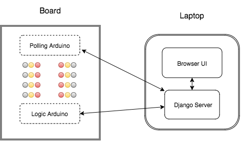

Introduction
We built a system intended to provide a layer of abstraction on top of the Arduino micro-controller. The system consists of a board containing slots to plug in modules. This board connects to a laptop computer, which displays a browser-based UI. The user interacts with the system by plugging various sensor or actuator modules (servos, accelerometers, etc.). The system automatically detects new modules and displays them on the UI. Once the interface is populated with modules, the user can link sensors and actuators together using “When” and “Do” statements, i.e. “WHEN: Accelerometer detects left, DO: tilt servo to the left.”
We originally intended for this system to be used as a teaching tool for beginner programmers, but we also believe that it can be used as a prototyping platform. This system was built in 24 hours (we used every single second) during Greylock Hackfest, which is considered to be one of the most prestigious hackathons. We were fortunate enough to win overall second place; our prizes inluded DJI Phantom Vision 2 quadcopters and accolades from several Silicon Valley execs including Pooja Sankar of Piazza, David Sze from Greylock Partners, and DJ Patil.
People
Ankush Gola, Joseph Bolling, Neil Chatterjee, Pranav BadamiBrief Technical Overview
Components
The system consists of the following components: a board with two Arduinos (one to detect modules, and one to interact with the modules), modules that plug into the board, and a laptop running a Django webserver and browser-based UI. The polling Arduino on the board continuously detects newly plugged in modules and sends this information to the webserver. The webserver saves information on the harddisk, then sends a packet to the client, where it is displayed on the UI. The user interacts with the modules on the "WhenDo" prompt of the UI. Once the user has picked a configeration, the UI sends this information back to the webserver, where it is translated in C++, then compiled into bytecode. The bytecode is uploaded onto the logic arduino. Workflow
It is easiest to explain the system in more technical detail by breaking down the workflow.Detecting Modules and Configurations
As you can see in the picture above, the board has two columns of rows consisting of a ground port, GPIO, and power (5V) port. he GPIO ports on the board are connected to the same number serial ports on both Arduinos, and the power and ground ports on the board are connected to power and ground on each Arduino.
We encased sensors and actuators in small cardboard boxes, exposing their power, ground, and I/O ports. We built three modules: a servo, push-button switch, and accelerometer. Each module also contains a resistor that is connected from I/O to ground on each sensor. The value of the resistor is different for each type of module. The event of plugging in a module triggers an interrupt on the polling Arduino. The polling Arduino knows the interrupt port, and figures out what module was plugged in by using the analogRead function and doing voltage divider arithmetic. The Arduino sends the type of module and port in string format to a buffer read by the Django Webserver on the laptop over USB (this is done using the pyserial module).
Updating the UI
The client continuously polls the webserver for new modules by hitting the poll_from_serial view in the Django server. This view reads in new modules (and their ports) from the polling Arduino over the pyserial link. The view creates either an Accel, Servo, or Button object encoded with the port number, then saves this object on the harddisk. The object is serialized into JSON format, then sent to the browser client. Each object also contains possible actions for each module (for example a Servo object can only tilt left/right. These actions are actually the name of the C++ function that gets called once the "WhenDo" statements are compiled. More on this later. The UI leverages bootstrap, Angular, and JQuery to create the "WhenDo" prompt. Once the user is satisfied with a configuration (i.e. "WHEN: Accelerometer detects left, DO: tilt servo to the left.”), the config gets serialized into a dictionary and sent back to the webserver.
Compiling
To compile the "WhenDo" statements into valid Arduino code (C++), we created aCompiler class which recursively looks through "WhenDo" dictionary and rearranges it into C++ syntax. The dictionary can look something like this: {"When":{{'accel':['port_1', 'port_3']}: 'is_left'}, "Do": {{'servo':'port_2'}: 'tilt_left'}}
This gets translated into something like this (exluding imports):
void setup(){
accel = Accel(1, 3)
servo = Servo(2)
}
void loop() {
if (accel.isLeft()) { servo.tiltLeft() }
}
Blockduino.cpp). This C++ gets compiled and uploaded onto the logic Arduino, and Ta-da!